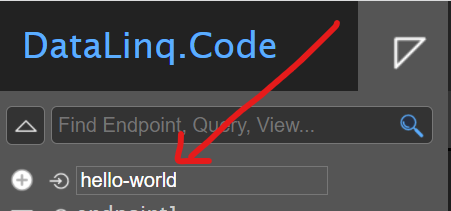
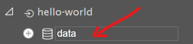
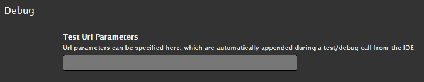
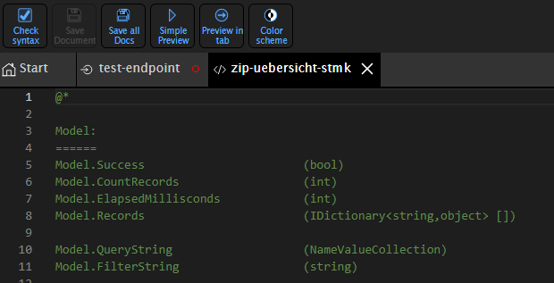
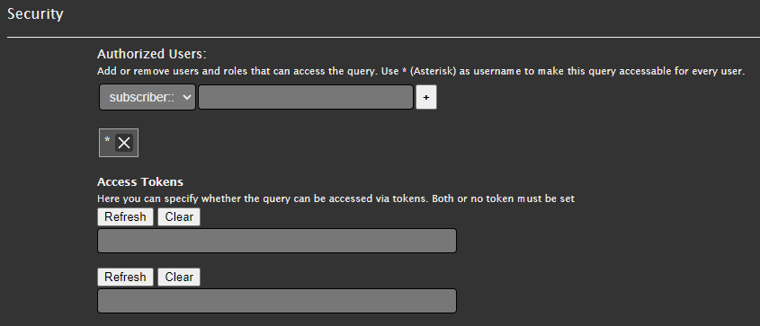

Parameterization¶
The navigation tree on the left shows the structure of the endpoints, queries, and views. Simply clicking an element allows it to be quickly selected and edited.
Endpoint¶
A new endpoint can be created directly in the sidebar. The top input field allows you to assign a name, which is confirmed with Enter.

Important
Endpoint names may only contain lowercase letters, numbers, and the hyphen (`-`). Special characters should be avoided, since the names later become part of the call URL.
Clicking on an endpoint opens the properties dialog, in which the following settings can be made:
Settings¶
The following overview lists all sections of the properties dialog with their respective fields:
Field |
Description |
|---|---|
General |
|
|
Unique name of the endpoint for the URL call |
|
Name of the endpoint |
|
Optional description |
Connection |
|
|
The following connection types are possible:
|
|
The configuration varies depending on the connection type.
|
Security |
Set permissions for users and roles (see Permissions). |
Info |
|
|
Creation date of the endpoint |
Styling |
|
|
Editing the CSS document for all associated views |
Scripting |
|
|
Editing the script document for all associated views |
Delete |
|
|
Deleting the endpoint |
Query¶
After selecting an endpoint, queries can be created for it. The queries enable access to the associated data.
A new query node can be created directly in the sidebar, below the desired endpoint:

Clicking on the new query opens an editor window in the content area, in which the query can be formulated.
The options and syntax for the query differ depending on the EndPoint Connection Type.
EndPoint Connection Type |
Example |
|---|---|
Database (SQL) |
Query with a set filter value
SQL query: SELECT
[NAME],
[FARBE]
FROM projekt_gebaeude
WHERE gebaeudeart = @GebaeudeArt
#if Dachfarbe
AND FARBE = @Dachfarbe
#endif
|
REST |
Here too, URL parameters passed along with the query URL can be forwarded to the REST API being queried. Example: https://server123.at/api?p1=parameter1
#if parameter2
&p2 = @parameter2
#endif
The resulting URL of the REST API being queried would be (if |
Text files (CSV) |
Hint
Warning The file must be located in the endpoint’s directory. This directory is specified in the endpoint’s connection type. The following parameters can be defined in the query: my-datafile.csv # Die Quelldatei, welche die Datensätze enthält
maxlines=10 # Maximale Anzahl der Zeilen (optional)
from=bottom # Von unten lesen (optional)
filter=xxx # Filterbedingung (optional)
A filter can be used to extract only the data rows that contain the text defined in the filter (case-insensitive). This can be helpful for searching large amounts of data and extracting only relevant information. Example of a URL with a filter: In this example, the URL Filter condition in the query: my-datafile.csv
...
#if GebaeudeArt
filter={{GebaeudeArt}}
#endif
This ensures that the filter is only applied if the value GebaeudeArt is defined. Otherwise, the filter is not applied, and all rows of the text file are included in the query. |
Settings¶
The settings for the respective query can be accessed by clicking the gear icon in the bottom-right corner of the editor window.
Field |
Description |
|---|---|
Link |
|
|
URL route for the query ( |
General |
|
|
Unique name of the query (used in the URL) |
|
Name of the query |
|
Optional description |
Debug |
|
|
Test parameters for the query can be defined and executed here.  Hint The test parameters should be chosen so that test queries can always be executed. |
Http Header |
If JsonApi was chosen as the type under
|
Security |
Set permissions for users and roles (see Permissions). |
Domains |
|
|
Query domains are used to replace encoded values in a table with understandable names, by using a lookup table that contains the encoded values and their translations.
|
Info |
|
|
Creation date of the query |
Delete |
|
|
Deleting the endpoint |
Views¶
One or more views can be created to display the results of a query.

Views use HTML with ASP.NET Razor markup.

Settings¶
The settings for the respective query can be accessed by clicking the gear icon in the bottom-right corner of the editor window.
Field |
Description |
|---|---|
Link |
|
|
URL route for the view ( |
General |
|
|
Unique name of the view (used in the URL) |
|
Name of the view |
|
Optional description |
Debug |
|
|
Test parameters for the query can be defined and executed here. Hint The test parameters should be chosen so that test queries can always be executed. |
JS Libraries |
The currently available JS libraries for the view can be added here. |
PDF Report mode |
Settings for a PDF report. More on this under pdfreporting.rst. |
DataLinq Cache Token |
Settings for the DataLinq cache token. More on this under use-cache-token-for-one-2-n-links. |
Info |
|
|
Creation date of the view |
|
Modification date of the view |
Delete |
|
|
Deleting the endpoint |
Permissions¶
Permissions can be set in the settings for endpoints and queries, which are inherited hierarchically.
Note
Hierarchically means: anyone who does not have access to an endpoint also cannot execute its queries.
Permissions can be set for individual users, roles, or groups.
Token and portal authentication are also possible.
Permissions are managed via the “+” icon or by pressing Enter.
Warning
Wildcards can also be assigned here using the string “*”. This string means unrestricted access for all users.

Styles (CSS)¶
CSS styles can be defined at two levels:
Global styles for the entire endpoint.
Inline styles directly in a view via <style> tags or style attributes.